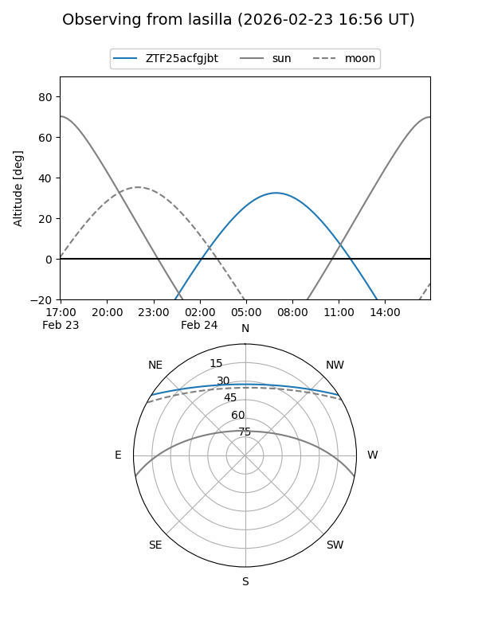
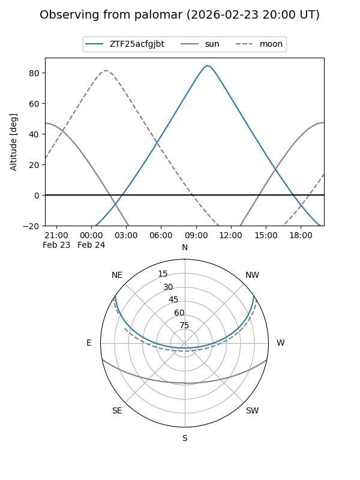

ZTF25acfgjbt
Target ZTF25acfgjbt at 2026-01-25 10:21
Aliases and brokers:
FINK: link
Lasair: link
ALeRCE: link
alt names
ZTF25acfgjbt (ztf,fink_ztf)
Coordinates:
equatorial (ra, dec) = 187.3132,+28.35419
equatorial (HMS+DMS) = 12:29:15.18,+28:21:15.07
galactic (l, b) = (197.6285,+84.94106)
Flags:
Photometry:
last ztfg=20.32
1 ztfg detections
Lightcurve

Visibility


Additional plots